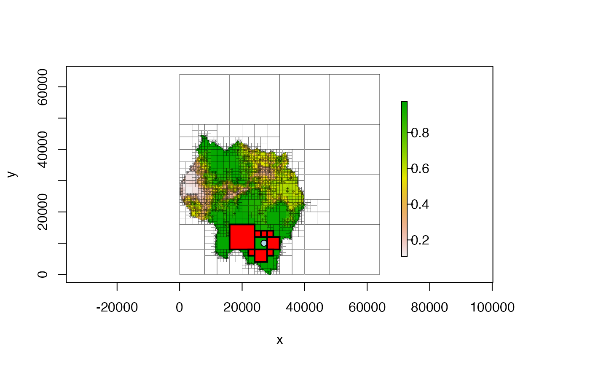

Returns a matrix with information about the neighbors of a quadtree cell.
# S4 method for Quadtree,numeric get_neighbors(x, y)
| x | |
|---|---|
| y | two-element numeric vector; the x and y coordinates of a point - this is used to identify which quadtree cell to find neighbors for. |
A six-column matrix with one row per neighboring cell. It has the following columns:
id: the ID of the cell
xmin, xmax, ymin, ymax: the x and y
limits of the cell
value: the value of the cell
Note that this return matrix only includes terminal nodes/cells - that is, cells that have no children. Also note that cells that are diagonal from each other are considered to be neighbors.
library(quadtree) data(habitat) # create a quadtree qt <- quadtree(habitat, split_threshold = .1, adj_type = "expand") # get the cell's neighbors pt <- c(27000, 10000) nbs <- get_neighbors(qt, pt) # plot the neighbors plot(qt, border_lwd = .3)